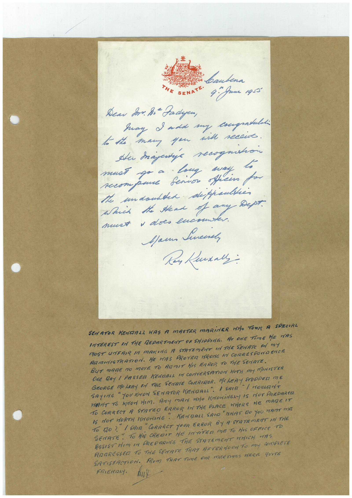

Book 1 · scan 124


Description
Transcription
Context
Review notes
Compare the machine draft with the scan. Handwriting and names need human review.
Artifacts
Edit the artifacts field in this note’s frontmatter to change these records. This summary is generated.
B01-S124-A01 — Letter & Handwritten note — Book 1, scan 124
Types: Letter, Handwritten note
Scope: Whole scanned page; individual items can be split out during review.
Caption: Not mapped yet.
Caption source: Not recorded yet.
Caption status: unmapped
Machine transcription
baubena THE SENATE• 4. Jame 1q55" Дели S. 8i- Fadyen, Say I add my congratuldi to the man you and recowe. He trajetie recognition must go a long may. secompane Senior officino po the undoubted deppeltes Such the Head of any - Дерт. must + does encouns Mann Sincere, SENATOR KENDALL WAS A MASTER MARiNER HAO TORN A SPECIAL INTEREST IN THE REDARTMENT DF SHIPPING. AT ONE TIME HE HAS MOST UNFRIR IN MAKING A STATEmENT IN ThE SEnATe On my RAMINISTRATION. ME HAS PROVER TRONG IN CORRESPONR ENCTE BUT MAGE NO MOrE TO RAMIT HIS FRROR TO THE SENATE. GEORGE MOLERY ON THE SENATE CORRIOR. ME HERY SPIEG NE ONE DRY 1 PASSED KENDALL IN CONVERSATION HITH MY MINISTER SAYING " YOU INOW SENATOR NENDALL". / SAIR HANT TO KNOW HIM. ANY MAN WHO KNOWINGLY IS NOT PREDARED TO CORRECT A STATEO ERROR IN THE PLACE MHERE HE MADE IT 15 NOT WORTH INORING. " KENDALL SAID "HAT DO YOU WANT MIE To tO ?" I SAIA "CORRECT YOUR ERROR BY A STATEMENT IN THE SENATE" TO HiS CREDIT ME INTiTER ME TO HIS OFFICe TO ASSIST HIM IN PREPARING THE STATEMENT WHICH WAS ANDRESSED TO THE SENATE THAT AFTERNOON TO MY COmPLETE SATISFACTION. FROM THAT TIME DUR MEETINES HERE qUITE FRIENDLY.